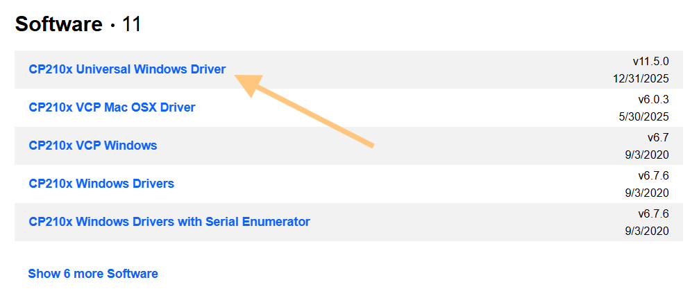
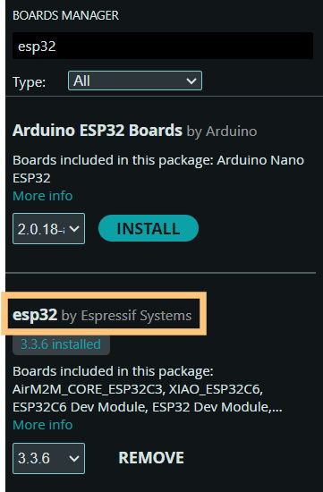

Instalace
Desku lze programovat v prostředí Arduino IDE, Arduino in 100 seconds
Pro správnou komunikaci s deskou je potřeba nainstalovat ovladač: zde

Dále v Arduino IDE nainstalovat desky ESP32. V záložce Tools -> Boards: -> Board Manager nainstalovat balíček esp32

Pro nahrání je potřeba vybrat správný COM port a desku ESP32 Dev Module
Pro otestování, že se kód správně nahrává, lze použít tento kód, který rozbliká LEDku na modulu:
void setup() {
Serial.begin(9600);
}
void loop() {
delay(500);
Serial.println("Hello World!");
}
Seznam doporučených knihoven
Knihovny lze instalovat pomocí Library manager (vlevo)
- BLE-Gamepad-Client pro komunikaci s dálkovým ovladačem
- Adafruit Neopixel pro ovládání LED pásku
- Ultrasonic pro práci s ultrazvukovými čidly
Na stránkách knihoven jsou i ukázky použití
Ovládání motorů
Motor lze řídit pomocí příkazu analogWrite(pin, hodnota).
Kdy hodnota je číslo od 0 (netočí) po 255 (maximální rychlost). Směr se určuje podle pinu (R_PWM jeden směr, L_PWM opačný), na kterém danou hodnotu nastavím, viz schéma.
Pozor: Nenastavujte nikdy otáčení jednoho motoru do obou směrů zároveň, jinak by mohlo dojít k poškození driveru!
// Špatně
analogWrite(R_PWM, 100);
analogWrite(L_PWM, 50);
// Správně
analogWrite(R_PWM, 100);
analogWrite(L_PWM, 0);
analogWrite(R_PWM, 0);
analogWrite(L_PWM, 50);
Požadované funkce
- Ovládání pomocí dálkového ovladače, levý joystick pohyb vpřed(vzad), pravý zatáčení doprava/doleva
- Zamezení nárazu do překážek pomocí čidel měření dálky (ultrazvuková čidla)